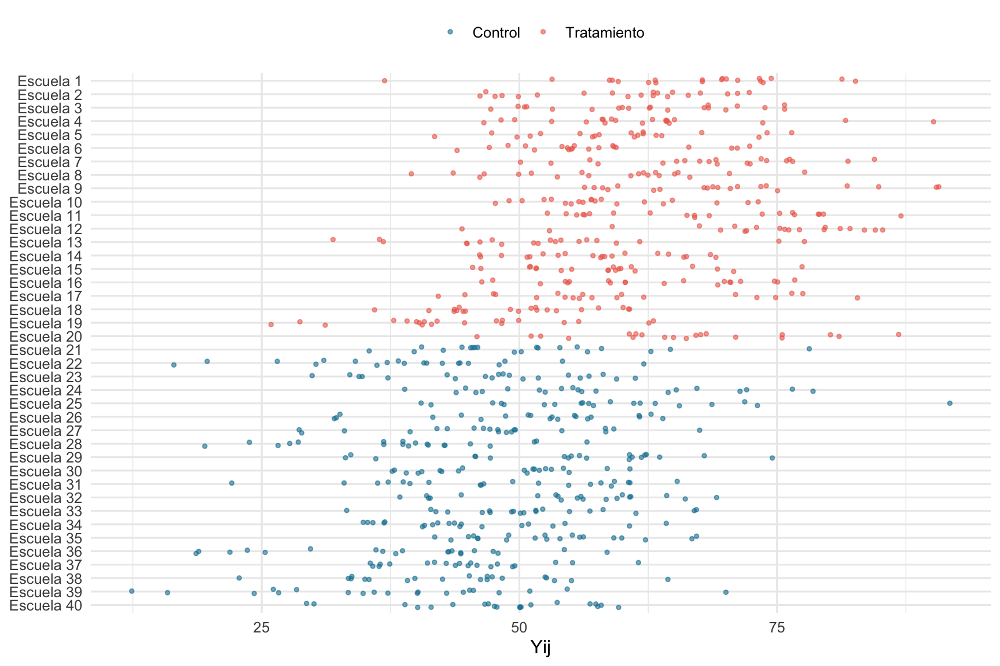
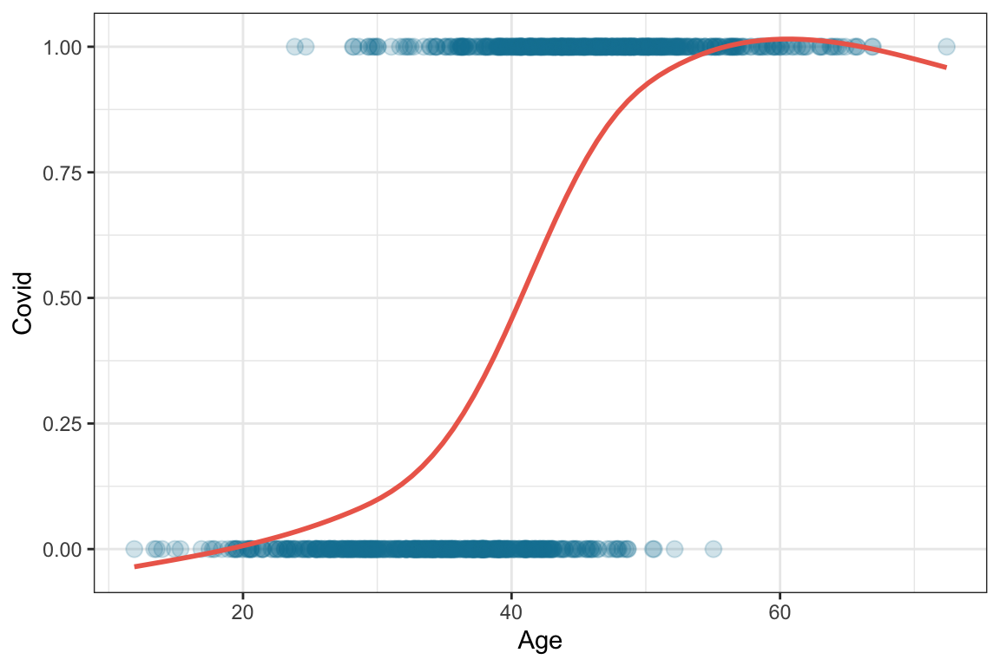
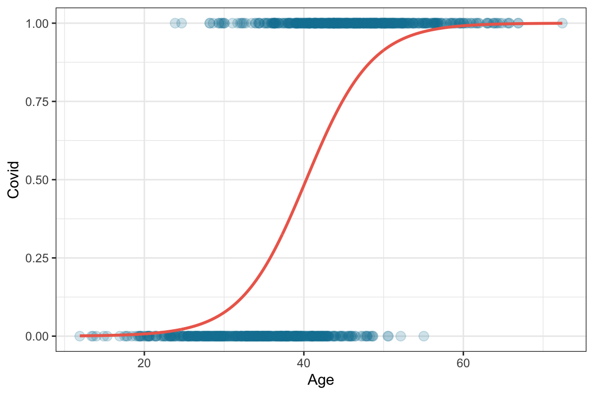

5 Experimentos aleatorios
En construcción 🚧
\[ peso_i = \beta_0 + \beta_1 aleta_i + \epsilon_i \]
\[ \epsilon_i \sim \mathcal{N}(0,1) \]
\[ \hat{peso}_i = \hat{\beta_0} + \hat{\beta_1} aleta_i \]
\[ \hat{peso}_i = -2508.09 + 32.69 aleta_i \]
\[ \begin{array} _\hat{peso}_i = -2508.09 + 32.69 \times 198 \\ \hat{peso}_i = 3964.53 \end{array} \]
\[ \begin{array} _r_i = 4400 − 3964.53 \\ r_i = 437.47 \end{array} \]
\[ \begin{array} _\hat{peso}_i = peso_i + r_i \\ r_i = peso_i - \hat{peso}_i \end{array} \]
\[ \hat{peso}_i = \hat{\beta_0} + \hat{\beta_1} especie_i \]
\[ \hat{peso}_i = 3706.16 + 1386.27 especie_i \]
\[ \hat{peso}_i = 3706.16 + 1386.27 especie_i \]
\[ peso_i = 500 + dientes_i + \epsilon_i \]
\[ \begin{array} _\beta_0 = 500 \\ \beta_1 = 1 \end{array} \]
Ver el código
set.seed(1414)
helados <- tibble(
Temperatura = rnorm(500, 20, 5),
Helados = 1 + 1*Temperatura + rnorm(500)
)
mnorm <- lm(Helados ~ Temperatura, data = helados)
summary(mnorm)
#>
#> Call:
#> lm(formula = Helados ~ Temperatura, data = helados)
#>
#> Residuals:
#> Min 1Q Median 3Q Max
#> -2.9943 -0.7203 0.0217 0.6110 3.8267
#>
#> Coefficients:
#> Estimate Std. Error t value Pr(>|t|)
#> (Intercept) 1.023977 0.189346 5.408 9.91e-08 ***
#> Temperatura 0.998676 0.009029 110.603 < 2e-16 ***
#> ---
#> Signif. codes: 0 '***' 0.001 '**' 0.01 '*' 0.05 '.' 0.1 ' ' 1
#>
#> Residual standard error: 1.049 on 498 degrees of freedom
#> Multiple R-squared: 0.9609, Adjusted R-squared: 0.9608
#> F-statistic: 1.223e+04 on 1 and 498 DF, p-value: < 2.2e-16
helados %>% ggplot(aes(x = Temperatura, y = Helados)) +
geom_point(alpha = .2) +
geom_smooth(color = "red", method = "lm", se = F)
#> `geom_smooth()` using formula = 'y ~ x'
Ver el código
set.seed(1414)
helados <- tibble(
Temperatura = rnorm(500, 20, 5),
Helados = 1 + 1*Temperatura + runif(500,-sqrt(3),sqrt(3))
)
mnorm <- lm(Helados ~ Temperatura, data = helados)
summary(mnorm)
#>
#> Call:
#> lm(formula = Helados ~ Temperatura, data = helados)
#>
#> Residuals:
#> Min 1Q Median 3Q Max
#> -1.72827 -0.91578 -0.01847 0.89431 1.90767
#>
#> Coefficients:
#> Estimate Std. Error t value Pr(>|t|)
#> (Intercept) 0.664068 0.183982 3.609 0.000338 ***
#> Temperatura 1.014403 0.008774 115.620 < 2e-16 ***
#> ---
#> Signif. codes: 0 '***' 0.001 '**' 0.01 '*' 0.05 '.' 0.1 ' ' 1
#>
#> Residual standard error: 1.019 on 498 degrees of freedom
#> Multiple R-squared: 0.9641, Adjusted R-squared: 0.964
#> F-statistic: 1.337e+04 on 1 and 498 DF, p-value: < 2.2e-16
helados %>% ggplot(aes(x = Temperatura, y = Helados)) +
geom_point(alpha = .2) +
geom_smooth(color = "red", method = "lm", se = F)
#> `geom_smooth()` using formula = 'y ~ x'
Ver el código
set.seed(1414)
helados <- tibble(
Temperatura = rnorm(500, 20, 5),
Helados = 1 + 1*Temperatura + rexp(500)
)
mnorm <- lm(Helados ~ Temperatura, data = helados)
summary(mnorm)
#>
#> Call:
#> lm(formula = Helados ~ Temperatura, data = helados)
#>
#> Residuals:
#> Min 1Q Median 3Q Max
#> -1.1834 -0.7676 -0.3420 0.4609 5.6699
#>
#> Coefficients:
#> Estimate Std. Error t value Pr(>|t|)
#> (Intercept) 1.721985 0.197047 8.739 <2e-16 ***
#> Temperatura 1.016518 0.009397 108.179 <2e-16 ***
#> ---
#> Signif. codes: 0 '***' 0.001 '**' 0.01 '*' 0.05 '.' 0.1 ' ' 1
#>
#> Residual standard error: 1.091 on 498 degrees of freedom
#> Multiple R-squared: 0.9592, Adjusted R-squared: 0.9591
#> F-statistic: 1.17e+04 on 1 and 498 DF, p-value: < 2.2e-16
helados %>% ggplot(aes(x = Temperatura, y = Helados)) +
geom_point(alpha = .2) +
geom_smooth(color = "red", method = "lm", se = F)
#> `geom_smooth()` using formula = 'y ~ x'
Ver el código
set.seed(1414)
helados <- tibble(
Temperatura = rnorm(500, 20, 5),
Helados = 1 + 1*Temperatura + rnorm(500) * Temperatura/5
)
mnorm <- lm(Helados ~ Temperatura, data = helados)
summary(mnorm)
#>
#> Call:
#> lm(formula = Helados ~ Temperatura, data = helados)
#>
#> Residuals:
#> Min 1Q Median 3Q Max
#> -15.5427 -2.6863 0.1051 2.4200 16.7710
#>
#> Coefficients:
#> Estimate Std. Error t value Pr(>|t|)
#> (Intercept) 1.20458 0.78320 1.538 0.125
#> Temperatura 0.98899 0.03735 26.480 <2e-16 ***
#> ---
#> Signif. codes: 0 '***' 0.001 '**' 0.01 '*' 0.05 '.' 0.1 ' ' 1
#>
#> Residual standard error: 4.338 on 498 degrees of freedom
#> Multiple R-squared: 0.5847, Adjusted R-squared: 0.5839
#> F-statistic: 701.2 on 1 and 498 DF, p-value: < 2.2e-16
helados %>% ggplot(aes(x = Temperatura, y = Helados)) +
geom_point(alpha = .2) +
geom_smooth(color = "red", method = "lm", se = F)
#> `geom_smooth()` using formula = 'y ~ x'
Ver el código
set.seed(123)
covid <- tibble(
Age = rnorm(1000, 40, 10),
Covid = rbinom(1000, 1, prob = exp(-10+.25*Age)/(1+exp(-10+.25*Age)))
)
covid %>%
ggplot(aes(x = Age, y = Covid)) +
geom_point(alpha = .2, width =.2) +
geom_smooth(se = F) +
theme_bw()
#> Warning in geom_point(alpha = 0.2, width = 0.2): Ignoring unknown
#> parameters: `width`
#> `geom_smooth()` using method = 'gam' and formula = 'y ~ s(x, bs = "cs")'
Ver el código
glm_1 <- glm(Covid ~ Age, family = "binomial", data = covid)
summary(glm_1)
#>
#> Call:
#> glm(formula = Covid ~ Age, family = "binomial", data = covid)
#>
#> Coefficients:
#> Estimate Std. Error z value Pr(>|z|)
#> (Intercept) -9.78738 0.63073 -15.52 <2e-16 ***
#> Age 0.24285 0.01553 15.64 <2e-16 ***
#> ---
#> Signif. codes: 0 '***' 0.001 '**' 0.01 '*' 0.05 '.' 0.1 ' ' 1
#>
#> (Dispersion parameter for binomial family taken to be 1)
#>
#> Null deviance: 1386.15 on 999 degrees of freedom
#> Residual deviance: 838.67 on 998 degrees of freedom
#> AIC: 842.67
#>
#> Number of Fisher Scoring iterations: 5Ver el código
fit <- tibble(
Age = seq(min(covid$Age), max(covid$Age), .1),
Covid = exp(glm_1$coefficients[1]+glm_1$coefficients[2]*Age)/(1+exp(glm_1$coefficients[1]+glm_1$coefficients[2]*Age))
)
covid %>%
ggplot(aes(x = Age, y = Covid)) +
geom_point(alpha = .2, width =.2) +
geom_line(data = fit, aes(x = Age, y = Covid), linewidth = 1) +
theme_bw()
#> Warning in geom_point(alpha = 0.2, width = 0.2): Ignoring unknown
#> parameters: `width`
\[ \hat{\beta_0} + \hat{\beta_1} edad_i = logit(p) = ln \left( \frac{p}{1-p} \right) \] $$
\[\begin{array} -9.78 + 0.24 \times 40 = ln(odds) &=& ln \left( \frac{p}{1-p} \right) \\ e^{(-9.78 + 0.24 \times 40 )} &=& \frac{p}{1-p} \\ \frac{e^{(-9.78 + 0.24 \times 40 )}}{1+e^{(-9.78 + 0.24 \times 40 )}} &=& p \\ \frac{e^{(-9.78 + 0.24 \times 40 )}}{1+e^{(-9.78 + 0.24 \times 40 )}} &=& p \\ 0.4816483 &=& p \end{array}\]$$
\[ odds(edad=40) = \frac{p}{1-p} = 0.9291921 \]
\[ \frac{e^{(-9.78 + 0.24 \times 41 )}}{1+e^{(-9.78 + 0.24 \times 41 )}} = 0.542 \\ \]
\[ odds(edad=41) = \frac{p}{1-p} = 1.184604 \]
\[ odds(edad=41)/odds(edad=40) = 1.274875 = e^{\hat{\beta_1}} \] \[ votoRusia_i = \beta_0 + \beta_1 TVRusa_i + \epsilon_i \]
\[ \log{\frac{p_{voto}}{1-p_{voto}}} = \beta_0 + \beta_1 TVRusa_i + \epsilon_i \]
\[ \begin{array} _p_{voto|TVRusa_i = 1} &=& \frac{e^{\hat\beta_0 + \hat\beta_1 \times 1}}{1 + e^{\hat\beta_0 + \hat\beta_1 \times 1}} &=& 0.29 \\ p_{voto|TVRusa_i = 0} &=& \frac{e^{\hat\beta_0 + \hat\beta_1 \times 0}}{1 + e^{\hat\beta_0 + \hat\beta_1 \times 0}} &=& 0.17 \\ \end{array} \]
\[ votoRusia_i = \beta_0 + \beta_1 TVRusa_i + \beta_2 Cercania25_i + \epsilon_i \]
\[ \rho_{pearson} = 0.8127747 \]
\[ \rho_{pearson} = 0.5317845 \]
\[ cambioVotoRusia_i = \beta_0 + \beta_1 TVRusa_i + \epsilon_i \]
\[ cambioVotoRusia_i = \beta_0 + \beta_1 TVRusa_i + \beta_2 Cercania25_i + \epsilon_i \]
\[ (Y^1, Y^0) \perp D \]
\[ (Y^1, Y^0) \perp D | X \] \[ X' = \left[ \frac{X_{edad} - \bar{X}_{edad}}{S_{edad}} , \frac{X_{ingreso} - \bar{X}_{ingreso}}{S_{ingreso}} \right] \]
\[ Y_i = \beta_0 + \beta_{tratamiento} D_i + \beta_1 X_{1i} + \beta_2 X_{2i} + \epsilon_i \]
\[ outcome_i = \beta_0 + \beta_{D} D_i + \beta_1 \sin(X_{1i}) + \epsilon_i \]
\[ \hat{ATT} = E[Y_1(1)-Y_0(1)|D=1] \]
\[ \hat{ATT} = E[Y_1(1)|D=1] - E[Y_1(0)|D=1] = 41.05 \]
\[ E[Y_0(1)|D=1] = E[Y_0(0)|D=1] \]
\[ \hat{ATT} = E[Y(1)|D=1] - E[Y(1)|D=0] = -119.1 \]
\[ E[Y_0(1)|D=0] = E[Y_0(1)|D=1] \]
\[ E[Y_0(1)|D=1] = E[Y_0(0)|D=1] + (E[Y_0(1)|D=0] - E[Y_0(0)|D=0]) \]
\[ E[Y_0(1) − Y_0(0)|D=1] = E[Y_0(1) − Y_0(0)|D=0] \]
\[ \begin{array} _\hat{ATT} &=& E[Y_1](1)-Y_0(1)|D=1] \\ &=& E[Y_1(1)|D=1] - E[Y_0(1)|D=1] \\ &=& E[Y_1(1)|D=1] - \{E[Y_0(0)|D=1] + (E[Y_0(1)|D=0] - E[Y_0(0)|D=0])\}\\ &=& E[Y_1(1)|D=1] - E[Y_0(0)|D=1] - E[Y_0(1)|D=0] + E[Y_0(0)|D=0] \\ &=& (E[Y_1(1)|D=1] - E[Y_0(0)|D=1]) - (E[Y_0(1)|D=0] - E[Y_0(0)|D=0]) \\ \end{array} \]
\[ \hat{ATT} = \hat{\delta} = (E[Y_1(1)|D=1] - E[Y_0(0)|D=1]) - (E[Y_0(1)|D=0] - E[Y_0(0)|D=0]) \]
\[ \hat{\delta} = 6.52 \]
\[ Y_i = \beta_0 + \beta_1 POA_i + \beta_2 Jul_i + \beta_3 POA_i*Jul_i + e_i \]
\[ \hat{Y_{FL}^{jun}} =\hat \beta_0 + \hat\beta_1 0 + \hat\beta_2 0 + \hat\beta_3 0*0 = \hat\beta_0 \]
\[ \hat{Y_{FL}^{jul}} = \hat\beta_0 + \hat\beta_1 0 + \hat\beta_2 1 + \hat\beta_3 0*1 = \hat\beta_0 + \hat\beta_2 \]
\[ \hat{Y_{PA}^{jun}} = \hat\beta_0 + \hat\beta_1 1 + \hat\beta_2 0 + \hat\beta_3 1*0 = \hat\beta_0 + \hat\beta_1 \]
\[ \hat{Y_{PA}^{jul}} = \hat\beta_0 + \hat\beta_1 1 + \hat\beta_2 1 + \hat\beta_3 1*1 = \hat\beta_0 + \hat\beta_1 + \hat\beta_2 + \hat\beta_3 \]
\[ \begin{array} _\hat{\delta} &=& (\hat{Y_{PA}^{jul}} - \hat{Y_{PA}^{jun}}) - (\hat{Y_{FL}^{jul}} - \hat{Y_{FL}^{jun}})\\ &=& [\hat\beta_0 + \hat\beta_1 + \hat\beta_2 + \hat\beta_3 - (\hat\beta_0 + \hat\beta_1)] - [\hat\beta_0 + \hat\beta_2 - \hat\beta_0 ] \\ &=& (\hat\beta_2 + \hat\beta_3) - (\hat\beta_2) &=& \hat\beta_3 \end{array} \]
\[ \hat{ATT} = 78 \]
\[ \widehat{\delta}^{2\times 2}_{kU} = \bigg ( \overline{y}_k^{post(k)} - \overline{y}_k^{pre(k)} \bigg ) - \bigg ( \overline{y}_U^{post(k)} - \overline{y}_U^{pre(k)} \bigg ) \]
\[ \widehat{\delta}^{2\times 2}_{kU} = \bigg(E\big[Y_k | Post\big] - E\big[Y_k | Pre\big]\bigg)- \bigg(E\big[Y_U | Post\big] - E\big[Y_U | Pre\big]\bigg) \]
\[ \begin{array} _\widehat{\delta}^{2\times 2}_{kU} &=& \bigg ( \underbrace{E\big[Y^1_k |Post\big] - E\big[Y^0_k |Pre\big] \bigg ) - \bigg(E\big[Y^0_U |Post\big] - E\big[ Y^0_U |Pre\big]}_{\text{Switching equation}} \bigg) \\ &+& \underbrace{E\big[Y_k^0 |Post\big] - E\big[Y^0_k |Post\big]}_{\text{Sumamos cero}} \end{array} \]
\[ \begin{array} _\widehat{\delta}^{2\times 2}_{kU} &=& \underbrace{E\big[Y^1_k |Post\big] - E\big[Y^0_k |Post\big]}_{\text{ATT}} \\ &+&\Big[\underbrace{E\big[Y^0_k |Post\big] - E\big[Y^0_k |Pre\big] \Big] - \Big[E\big[Y^0_U |Post\big] - E\big[Y_U^0 |Pre\big] }_{\text{Sesgo de tendencias no pralelas para el caso de 2 x 2}} \Big] \end{array} \]
\[ \begin{array} _\widehat{\delta}^{2\times 2}_{NJ,PA} &=& \underbrace{E\big[Y^1_{NJ} | Post\big] - E\big[Y^0_{NJ} | Post\big]}_{\text{ATT}} \\ &+& \Big[\underbrace{E\big[Y^0_{NJ} | Post\big] - E\big[Y^0_{NJ} | Pre\big] \Big]-\Big[E\big[Y^0_{PA} | Post\big] - E\big[Y_{PA}^0 | Pre\big] }_{\text{Sesgo de tendencias no pralelas}} \Big] \end{array} \]
\[ \delta=E[Y^1_{NJ,Post}] - E[Y^0_{NJ,Post}] \] \[ \widehat{\delta}^{2\times 2}_{NJ,PA} = \bigg ( \overline{y}_k^{post(NJ)} - \overline{y}_k^{pre(NJ)} \bigg ) - \bigg ( \overline{y}_U^{post(PA)} - \overline{y}_U^{pre(PA)} \bigg ) \]
\[ Y_{i} = \beta_s + \beta_t + \sum_{\tau=1}^{3}\gamma_{\tau}D_{s\tau} + \sum_{\tau=4}^6\delta_{\tau}D_{s\tau}+ \varepsilon_{ist} \]
\[ Y_{i} = \beta_s + \beta_t + \sum_{\tau=-q}^{-1}\gamma_{\tau}D_{s\tau} + \sum_{\tau=0}^m\delta_{\tau}D_{s\tau}+ \varepsilon_{ist} \]
\[ y = \beta_0 + \beta_1 \text{Running variable (centrada)} + \beta_2 \text{indicadora del tratamiento} \]
\[ D_i = \begin{cases} 1 \text{ if } & X_i\geq{c_0} \\ 0 \text{ if } & X_i < c_0 \end{cases} \]
\[ \begin{align} Y_i^0 & = \alpha + \beta X_i \\ Y^1_i & = Y_i^0 + \delta \end{align} \]
\[ \begin{align} Y_i & =Y_i^0 + (Y_i^1 - Y_i^0) D_i \\ Y_i & =\alpha+\beta X_i + \delta D_i + \varepsilon_i \end{align} \]
\[ \begin{align} \delta & =\lim_{X_i\rightarrow{X_0}} E\big[Y^1_i\mid X_i=X_0\big] - \lim_{X_0\leftarrow{X_i}} E\big[Y^0_i\mid X_i=X_0\big] \\ & =\lim_{X_i\rightarrow{X_0}} E\big[Y_i\mid X_i=X_0\big]- \lim_{X_0\leftarrow{X_i}} E\big[Y_i\mid X_i=X_0\big] \end{align} \]
\[ \delta_{SRD}=E\big[Y^1_i - Y_i^0\mid X_i=c_0] \]
\[ E[Y^1_i] \,\,\, y \,\,\, E[Y^0_i] \]
\[ E[Y^0_i] \]
\[ \color{#FF851B}{\text{Salario}_i} \color{#111111}{= \beta_0 + \beta_1} \color{#0074D9}{\text{Educación}_i} \color{#111111}{+ \varepsilon_i} \]
\[ \text{Salario}_i = \beta_0 + \beta_1 \text{Educación}_i + \beta_2 \text{Habilidad}_i + \varepsilon_i \]
\[ \color{#FF851B}{\text{Salario}_i} \color{#111111}{= \beta_0 + \beta_1} \color{#0074D9}{\text{Educación}_i} \color{#111111}{+ \beta_2} \color{#FF4136}{\text{Habilidad}_i} \color{#111111}{+ \varepsilon_i} \]
\[ \color{#FF851B}{\text{Salario}_i} \color{#111111}{= \beta_0 + \beta_1} \color{#0074D9}{\text{Educación}_i} \color{#111111}{+} \color{#FF4136}{\varepsilon_i} \]
\[ \begin{aligned} \color{#FF851B}{\text{Salario}_i} =& \beta_0 + \beta_1 \color{#B10DC9}{\text{Educación}_i} \color{#111111}{+ \varepsilon_i} \\ & \beta_0 + \beta_1 (\color{#0074D9}{\text{Educación}_i^\text{exog.}} \color{#111111}{+} \color{#FF4136}{\text{Educación}_i^\text{endog.}}) \color{#111111}{+ \varepsilon_i} \\ & \beta_0 + \beta_1 \color{#0074D9}{\text{Educación}_i^\text{exog.}} \color{#111111}{+} \underbrace{\beta_1 \color{#FF4136}{\text{Educación}_i^{\text{endog.}}} \color{#111111}{+ \varepsilon_i}}_{\color{#AAAAAA}{\omega_i}} \\ & \beta_0 + \beta_1 \color{#0074D9}{\text{Educación}_i^\text{exog.}} \color{#111111}{+} \color{#AAAAAA}{\omega_i} \end{aligned} \]
\[ \begin{aligned} &\widehat{\text{Educación}}_i = \\ &\quad \gamma_0 + \gamma_1 \text{Educación del padre}_i + \upsilon_i \end{aligned} \]
\[ \begin{aligned} &\text{Salario}_i = \\ &\quad \beta_0 + \beta_1 \widehat{\text{Educación }}_i + \varepsilon_i \end{aligned} \]
\[ \begin{aligned} \widehat{\text{Educación}}_i =&\ \gamma_0 + \gamma_1 \text{Educación del padre}_i +\\ &\ \gamma_2 \text{Educación de la madre}_i + \upsilon_i\\ \\ \text{Salario}_i =&\ \beta_0 + \beta_1 \widehat{\text{Educación}}_i + \varepsilon_i \end{aligned} \]
\[ \begin{aligned} \widehat{\text{Educación}}_i =&\ \gamma_0 + \gamma_1 \text{Educación del padre}_i + \gamma_2 \text{Educación de la madre}_i +\\ &\ \gamma_3 \text{SES}_i + \gamma_4 \text{Estado}_i + \gamma_5 \text{Año}_i + \upsilon_i\\ \\ \text{Salario}_i =&\ \beta_0 + \beta_1 \widehat{\text{Educación}}_i +\\ &\ \beta_2 \text{SES}_i + \beta_3 \text{Estado}_i + \beta_4 \text{Año}_i + \varepsilon_i \end{aligned} \]
\[ logit(y_i) = \beta_0 + \beta_1 x_i + \epsilon_i \]